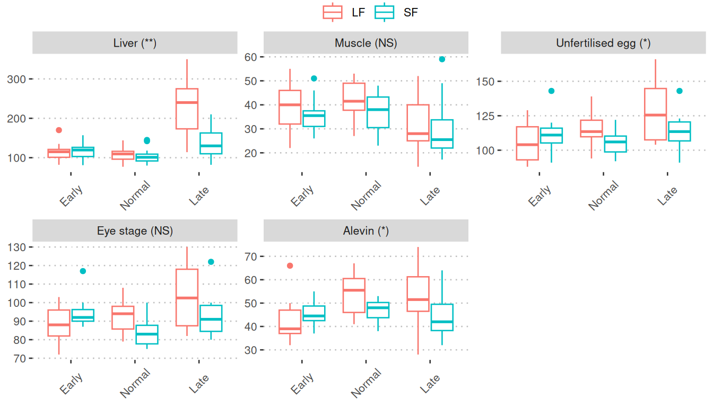
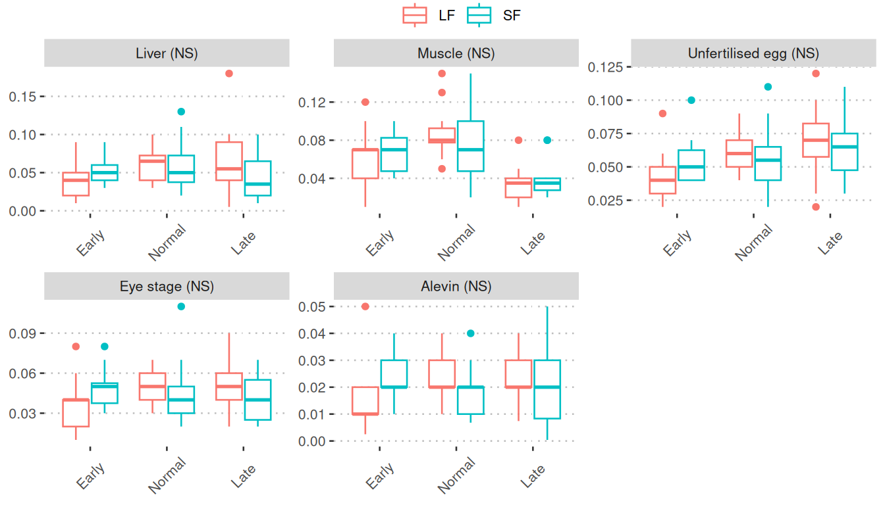

Comparison by feeds (spawning, vitamin D, E & K)
Comparative analysis of vitamin D, E, and K levels in spawning samples based on feed types
About this page
This page presents the findings from our analysis of spawning/offspring samples during the freshwater period, focusing on two different feed types. The two feed types are:
- LF: long-term feeding
- SF; short-term feeding
Statistical analysis

Two-way ANOVA was performed for each nutrient/metabolite by:
- Dependent variable: level of nutrient/metabolite.
- Independent variables: month and feed.
Only p-values calculated from the “feed” factor were used in this analysis. The significance level is represented throughout the page as follows:
- NS: non-significance
- *: significant (p-value < 0.05)
- **: highly significant (p-value < 0.01)
- ***: very highly significant (p-value < 0.001)
Page sections
This page is organized with three sub-sections.
Summary table: A table displays the sample counts of ANOVA results categorized into four significance levels: NS, *,**, and ***.
Significant: The boxplots visually represent nutrient/metabolite levels across three sampling points. These boxplots are only displayed when at least one comparison is identified as significant. The vertical line (red, dotted) represents the average value of the three sampling points. The three sampling points are:
- Early: Nov21, November 2021
- Normal: Dec21, December 2021
- Late: Feb22, February 2022
Significance levels are indicated next to the tissue name within parentheses at the top of each boxplot.
Non-significant: This section displays boxplots for the nutrients/metabolites that did not yield any significant outcomes. Essentially, the format is the same as that of the Significant section.
Summary table
Significant (2/4)
Vitamin E
Vitamin E

Vitramin K
Vitamin K1

Non-significant (2/4)
Vitamin D3
Vitamin D3

Vitramin K
Vitamin K2
